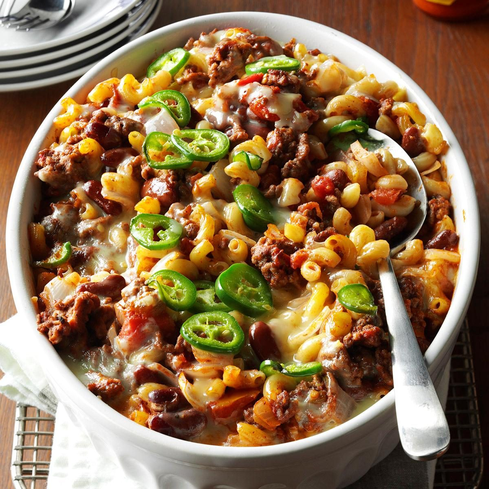

Southwestern Casserole
I've been making this mild family-pleasing southwest casserole recipe for years.
It tastes wonderful, fits nicely into our budget and, best of all, makes a second one to freeze and enjoy later.
—Joan Hallford, North Richland Hills, Texas

Ingredients
- 2 cups (8 ounces) uncooked elbow macaroni
- 2 pounds ground beef
- 1 large onion, chopped
- 2 garlic cloves, minced
- 2 cans (14-1/2 ounces each) diced tomatoes, undrained
- 1 can (16 ounces) kidney beans, rinsed and drained
- 1 can (6 ounces) tomato paste
- 1 can (4 ounces) chopped green chiles, drained
- 1-1/2 teaspoons salt
- 1 teaspoon chili powder
- 1/2 teaspoon ground cumin
- 1/2 teaspoon pepper
- 2 cups shredded Monterey Jack cheese
- 2 jalapeno peppers, seeded and chopped
Steps
- Cook macaroni according to package directions. Meanwhile, in a large saucepan, cook beef and onion over medium heat, crumbling beef, until meat is no longer pink.
Add garlic; cook 1 minute longer. Drain. Stir in next 8 ingredients. Bring to a boil. Reduce heat; simmer, uncovered, for 10 minutes.
Drain macaroni; stir into beef mixture.
- Preheat oven to 375°. Transfer macaroni mixture to 2 greased 2-qt. baking dishes. Top with cheese and jalapenos. Cover and bake at 375° for 30 minutes. Uncover; bake until bubbly and heated through, about 10 minutes longer.
Serve 1 casserole. Cool the second; cover and freeze up to 3 months.
Cover and bake, increasing time as necessary to heat through and for a thermometer inserted in center to read 165°, 20-25 minutes.
- To use frozen casserole: Thaw in refrigerator 8 hours. Preheat oven to 375°. Remove from refrigerator 30 minutes before baking.